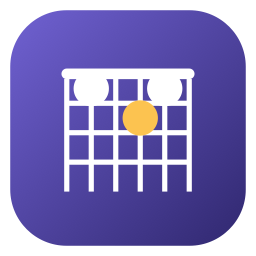
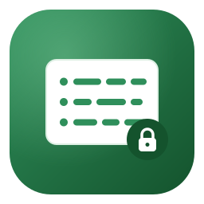

One small Mac app.
It does one thing, says exactly what it touches, and never phones home. Free, no accounts. Built by Keith Adler.

Chordmap for Mac
Play a song in any app on the Mac and see the chords as they go by: the key, the tempo, the bars by section, and where the capo goes so the open shapes play it. Every listen kept with its chord sheet. A guitar into an interface works too.
It hears; it never records. No database, no song titles, nothing leaves the Mac.
DownloadSourceIt is ad-hoc signed, so the first open is a right-click and Open. It checks GitHub once a day for a new version and can be told not to. Nothing else leaves the Mac.
Four small Windows apps.
Same shape as the Mac one: one thing, plain English about what it touches, never phones home. Free, MIT licensed, no accounts.
Plain for Windows
A bare-bones editor for the Word, Excel and PowerPoint files other people send you. Change the words, the numbers and the formulas; sort, filter and de-duplicate rows; add, rename and reorder sheets and slides; colour, align and box in cells; ask any cell what it reads and what reads it; see the headers, footers and speaker notes nobody looks at, and every link with where it really goes; compare two versions and see what changed; find which files in a folder mention something; see what a file would carry with it before you send it. One exe, no ribbon, no account, no assistant.
It never damages what it cannot show you. Charts, macros, pivot tables and headers are written back as the exact bytes it found. Open a file, save it without changing anything, and you get the same file back byte for byte, which is a claim its own tests check on every build.
DownloadSourceStay for Windows 10
Windows 10 stopped being supported in October 2025 and your PC will not tell you where that leaves it. This does: whether Windows here is still being patched and until when, whether the updates you are entitled to are actually arriving, what is still getting fixed anyway (Edge, Defender, Office, your browser), whether this PC can take Windows 11 and exactly which check fails. Then what is making it slow, measured from Windows' own log rather than guessed, the advertising and telemetry still switched on, and the bundled apps nobody asked for.
Every change is written to a receipt first, with the value it had before, and one button puts it back. It shows its working, and when two things about your PC disagree it says so instead of guessing. It cannot patch Windows, and says so.
DownloadSourceQuiet for Windows
Every piece of bundled junk, advertising surface, AI hook and telemetry switch on your PC on one screen, in plain English, each with what it costs you to turn it off. Solitaire, Clipchamp and the Bing apps ticked for you; Copilot, Recall and Click to Do named; the Settings home page, the lock screen offers, Bing in the search box. One tick reaches every account on the PC.
It never changes anything without a receipt that undoes it. It never connects to anything. A removed app is the one thing it cannot put back, and it says so.
DownloadSource
Stash for Windows
Encrypted backup of the folders that matter, into the storage you already have: the OneDrive that comes with 365, the Google Drive that comes with Gmail, Dropbox, iCloud, a disk, a NAS. Several at once, on a schedule. Same format and same card as Stash for Mac.
The provider only ever sees ciphertext. Your key is 24 words on a card. No password, no recovery, no server.
DownloadSourceWindows 10 and 11, ARM64 and x64. One exe, no installer, no runtime to install. It is signed by its author, so the first open is SmartScreen's More info, then Run anyway. Nothing leaves the PC.